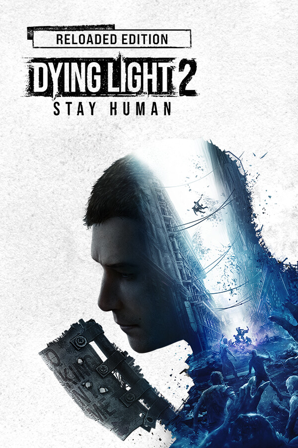

Dying Light 2: Reloaded Edition
Dying Light 2: Reloaded Edition
Details
|  | |
| Playtime | Not Played |
| Last Activity | Never |
| Added | 2/8/2025 15:55:04 |
| Modified | 8/10/2025 9:08:20 |
| Completion Status | $Check Out |
| Library | PlayStation |
| Source | PlayStation |
| Platform | Sony PlayStation 5 |
| Release Date | 2/3/2022 |
| Community Score | 72 |
| Critic Score | 77 |
| User Score | |
| Genre | Adventure Role-playing (RPG) |
| Developer | Techland Techland Publishing |
| Publisher | Spike ChunSoft Techland Publishing |
| Feature | Co-Operative Multi-Player Single-Player |
| Links | Official Wikipedia YouTube Steam Epic Twitch Wikia |
| Tag | Action Action RPG Action-Adventure Adventure Choices Matter Combat Co-op Exploration First-Person Gore Horror Multiplayer Multiple Endings Open World Parkour Post-apocalyptic Singleplayer Survival Violent Zombies |
Description
It’s been 20 years since the events of the original game. The virus won, and humanity is slowly dying. You play as Aiden Caldwell, a wandering Pilgrim who delivers goods, brings news, and connects the few remaining survivor settlements in barren lands devastated by the zombie virus. However, your true goal is to find your little sister Mia, who you left behind as a kid to escape Dr. Waltz's torturous experiments. Haunted by the past, you eventually make the decision to confront it when you learn that Mia may still be alive in Villedor — the last city standing on Earth.
You quickly find yourself in a settlement torn by conflict. You’ll need to engage in creative and gory combat, so hone your skills to defeat hordes of zombies and make allies. Roam the city, free run across Villedor’s buildings and rooftops in search of loot in remote areas, and be wary of the night. With every sunset, monsters take control of the streets.
Fifteen years ago, humanity was devastated by the Fall — a catastrophic event that would change the world forever. With the Harran virus spreading around the globe, people quickly found out that all hope for tomorrow is lost. By 2036, only a few settlements remain, and humanity is slowly dying, making way for the new species out there — a horde of relentless zombies.
Welcome to Villedor, one of the last bastions of humanity. During the day, survivors still try to have a life here and find a false sense of normalcy. Relationships are formed, dreams are dreamed, and life carries on. On the surface, everything seems… fine. Until sunset, that is. With the last ray of light dying out, other, more dreadful, dwellers of The City crawl out of their gloomy interiors, taking over the streets. If you are not vigilant and stay out too long in the dark, you may never return.
Not all fights can be won. Sometimes it’s best to run and, thankfully, you have the skills for it. Parkour lets you escape when odds are not in your favor. Jump from rooftop to rooftop, swing across the cityscape, ride ziplines, and much more. Whatever you do, experience a unique sense of freedom as you freerun across Villedor’s buildings and rooftops in search of loot or while running away from the dangers of the night.
In a world as dangerous as this one, only the strongest survive. Whether you prefer to smash, slice or dismember those who stand in your way, you have to be creative about it to make it through. And who says you need weapons? Utilize the entirety of your parkour moveset to get the jump on your enemies. Learn the ways of combat and parkour to feel the crunch of skulls and slices of flesh as you swing weapons or use your moves to fend off any forms of danger. And let’s not forget that Villedor has weapons that put the most advanced post-apocalyptic armories to shame.
Surviving in Villedor is easier with friends. Team up with up to 3 other players and increase your chances out there. Unravel the story together, take on Pilgrim Outpost challenges, or simply wreak havoc on the city streets.